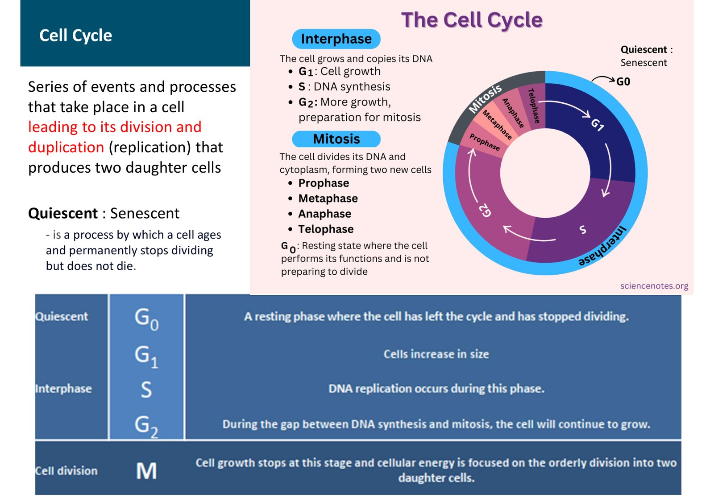
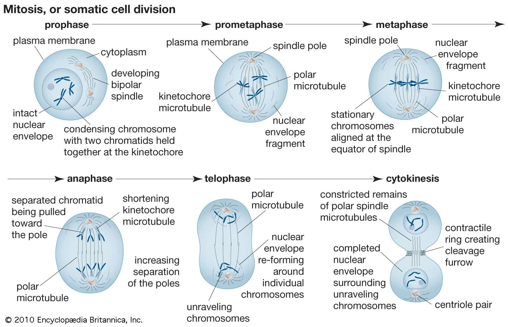
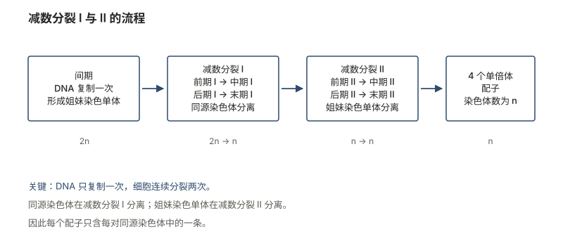

BIO103 · 第 2 章
细胞周期、有丝分裂与减数分裂
Cell Cycle, Mitosis & Meiosis
虚线下划线为术语；悬停查看中文、英文与释义，完整词典见“术语”。
本章目录
本章讨论细胞为什么必须复制遗传物质、DNA 以何种构象被包装进细胞核，以及有丝分裂与减数分裂如何分别实现“增殖”与“产生变异”两种不同的结果。
本章要点
- 细胞周期是导致细胞分裂与复制、产生两个子细胞的一系列事件；不再分裂的细胞可处于静息或衰老状态。
- 有丝分裂负责生长，减数分裂负责世代延续；人类体细胞有 23 对同源染色体。
- DNA 两条链反向平行，A 与 T 之间 2 个氢键、G 与 C 之间 3 个氢键，核苷酸之间以磷酸二酯键相连。
- B-DNA 是最常见的右手螺旋，每圈约 10.5 个碱基对；Z-DNA 为左手螺旋。
- 约 2 m 的线性 DNA 要装进直径约 10 μm 的核，压缩比约 1/200,000。
- 有丝分裂产生遗传上相同的二倍体子细胞；减数分裂经两次分裂产生四个单倍体细胞。
- 减数分裂的变异来源：前期 I 的联会与交换，以及中期 I 同源染色体的自由组合。
2.1 细胞周期与不再分裂的细胞
细胞周期cell cycle是细胞内发生的一系列事件与过程，最终导致细胞分裂与复制，产生两个子细胞。真核体细胞的周期通常为 12–24 h，但随物种与细胞类型变化很大。
并非所有细胞都在持续分裂。讲义并列给出两种状态：quiescent（静息）与 衰老senescent。衰老的定义是：细胞老化并永久停止分裂，但并不死亡。术语表另列出 G₀ 期G₀ phase（静息期），用于描述暂时或长期退出周期的细胞；讲义未对 quiescent 给出独立的定义，此处只保留术语与状态名，具体判定标准本课程资料未提供。
周期的分期名称由术语表给出：间期interphase包含 G₁ 期G₁ phase、S 期S phase（DNA 合成期）与 G₂ 期G₂ phase；M 期包含前期prophase、中期metaphase、后期anaphase与末期telophase，随后是胞质分裂cytokinesis。讲义正文只给出分期名称与 S 期进行 DNA 复制的定位，各期的细胞学事件细节本课程资料未提供。

L1–2 p.38–40
2.2 复制的原因：遗传含量与 DNA 结构
讲义把复制的意义归结为两件事：生长依靠有丝分裂（mitosis），世代延续依靠减数分裂（meiosis）。就遗传含量而言，人类有 23 条染色体构成的同源对（homologous pairs）；每个基因有两个代表性等位基因（alleles）；每条染色体可含 1 条或 2 条染色单体（chromatids）。
DNA 由核苷酸nucleotide聚合而成，每个核苷酸 = 含氮碱基 + 脱氧核糖 + 磷酸基团。碱基配对是特异的：A 与 T 配对，形成 2 个氢键；G 与 C 配对，形成 3 个氢键。相邻核苷酸之间由磷酸二酯键phosphodiester linkage连接，即前一个糖的 3′-OH 与后一个核苷酸的 5′-磷酸之间形成共价键。
两条链方向相反（antiparallel）：一条为 5′→3′，另一条为 3′→5′，彼此缠绕形成双螺旋double helix。嘌呤为双环（A、G），嘧啶为单环（C、T）。这一组要点可概括为四句话：A-T、G-C 通过氢键互补配对；核苷酸之间由磷酸二酯键相连；两条链反向平行；两条链缠绕成双螺旋。
Clean vector diagram of a DNA double helix opened into a ladder view: two antiparallel sugar-phosphate backbones labelled 5 prime and 3 prime at each end, phosphodiester bonds marked between adjacent nucleotides, A paired with T by two dashed hydrogen bonds and G paired with C by three dashed hydrogen bonds, with one nucleotide callout showing phosphate group, deoxyribose and nitrogenous base. Flat 2D, thin 1.5 px strokes, muted slate blue and warm grey palette, white background, English labels, no cartoon, no gradient, no shadow.
L1–2 p.40–41
2.3 DNA 的构象与包装
DNA 可采取不同的螺旋构象：A-DNA 是右手螺旋，出现在脱水条件下的 DNA 中；B-DNA 是最常见的右手形式，每圈约 10.5 个碱基对，直径约 1.8 nm（18 Å）；Z-DNA 是左手螺旋，由嘌呤-嘧啶交替序列所偏好。三者都具有大沟（major groove）与小沟（minor groove），沟的宽度与深度不同，这是蛋白识别特定序列的结构基础。
包装问题可以用一组数字说明：人类最长染色体的线性 DNA 长约 10 cm；哺乳动物细胞中约有 2 m 的线性 DNA（linear DNA，即直链、非环状的 DNA 分子），却要装进直径约 10 μm 的细胞核。按讲义的计算，10 μm / 2,000,000 μm = 1/200,000，即压缩到原长的二十万分之一。
L1–2 p.42–44
2.4 复制的位置与染色质状态
复制发生在细胞核内；细胞中 99% 的 DNA 位于核内。核内 DNA 与组蛋白及其他蛋白结合形成染色质chromatin，染色质有两种状态：异染色质heterochromatin高度致密、紧凑；常染色质euchromatin松散、开放。
人类核型（karyotype）有 46 条染色体。人体细胞分两类：体细胞（somatic cells，身体细胞）与性细胞（sex cells，即配子 gametes）。体细胞含同源染色体对，每个基因有两个等位基因；配子只含一套染色体。
实现压缩的关键是组蛋白histone：组蛋白高度保守（highly conserved），DNA 缠绕其上形成核小体nucleosome，核小体逐级折叠，最终在分裂期形成光学显微镜下可见的染色体。核型图（karyotype）把 46 条染色体按大小与着丝粒位置排列，每条染色体分短臂与长臂，可用于判断染色体数目异常。
L1–2 p.45–46
2.5 有丝分裂：保守的增殖
有丝分裂的核心要求是：细胞遗传物质的分离（separation / segregation）与复制必须完成。它是保守的（conservative），生成精确的拷贝——母细胞为二倍体（2N），产生两个二倍体（2N）子细胞；每个子细胞获得正确数量的染色体，即 23 对、46 条。分裂时核被膜“消失”，染色体与纺锤体直接接触细胞质。
有丝分裂产生遗传上相同的子细胞，无性繁殖即建立在核的有丝分裂之上：可以是单细胞生物复制自身，也可以是多细胞生物脱落的细胞形成新个体。其子代是克隆（clones），与亲本遗传上相同。
讲义以草履虫（Paramecium）为例说明“有丝分裂并非唯一的分裂方式”：草履虫的大核进行无丝分裂（amitotic division），小核进行有丝分裂，同时形成新的口沟与伸缩泡。这一例子提示：同一细胞内可同时存在不同的分裂机制。

L1–2 p.47–50
2.6 减数分裂：变异从何而来
有丝分裂与减数分裂名称相似，但定义的细胞学结果完全不同。有性繁殖的后代与亲本不相同；减数分裂产生的配子彼此之间也不相同，从而把遗传变异引入群体。
变异的实现依赖三个环节。第一，减数分裂meiosis产生配子，配子只含基因组的一半，即单倍体（haploid）。第二，交换crossing over / genetic recombination发生在同源染色体的非姐妹染色单体之间，互换遗传物质。第三，受精（fertilization）时来自母方与父方的两个配子融合，把染色体数恢复到原来的二倍体值。
数目关系可写作 2n → n：减数分裂使细胞分裂两次，形成四个各含一半遗传信息的细胞。体细胞（somatic cells）是不特化为生殖的身体细胞，每个体细胞含同源染色体对，每一对中的一条来自父方、一条来自母方；配子gamete只含一套染色体。单倍体haploid的染色体数为 N；受精后两个单倍体配子（卵与精子）融合形成二倍体受精卵zygote，染色体数为 2N。
L1–2 p.51–52
2.7 减数分裂 I 与减数分裂 II
减数分裂 I 的关键事件是前期 I 的联会synapsis：同源染色体配对，使交换得以发生；交换后的重组染色单体同时含有来自双亲的遗传物质。中期 I 时，同源染色体对随机排列在赤道板上，这一随机排列产生自由组合independent assortment。人类有 23 对染色体，仅自由组合一项即可产生 2²³ = 8,388,608 种组合。
减数分裂 II 分离姐妹染色单体，过程与有丝分裂相似，但起始细胞已是单倍体。讲义以 2N = 4 的动物细胞为例：经过减数分裂 I 与 II，最终形成四个单倍体（N）子细胞。
把两次分裂合起来看，变异有两个独立来源：前期 I 的交换（重组）与中期 I 的自由组合（不同同源染色体对的随机取向）。二者叠加，使一个个体产生的配子几乎不可能完全相同。

绘图提示词
Clean vector flowchart of meiosis for a cell with 2N equals 4: top row shows meiosis I with synapsis and crossing over between non-sister chromatids in prophase I, homologous pairs aligned at the metaphase I plate, then two haploid cells; bottom row shows meiosis II with sister chromatids separating to give four haploid cells, each labelled N. Flat 2D, thin strokes, muted slate blue and warm grey, white background, English labels, no cartoon, no gradient, no shadow.
L1–2 p.53–55
2.8 有丝分裂与减数分裂的比较
把两者放在同一张表里，差异集中在起点、分裂次数、产物数目与遗传结果四个维度上。讲义给出的判断题正是抓住“根本差别”这一点：区分减数分裂与有丝分裂的根本标志是产生单倍体细胞（haploid cell），而不是“是否发生细胞分裂”或“是否进行基因组复制”——两者都要复制 DNA，也都进行细胞分裂。
| 维度 | 有丝分裂 | 减数分裂 |
|---|---|---|
| 分裂次数 | 一次 | 两次（I 与 II） |
| 产物 | 2 个子细胞 | 4 个子细胞 |
| 倍性变化 | 2N → 2N（保守） | 2N → N（减半） |
| 遗传结果 | 与母细胞相同，克隆 | 彼此不同，且不同于亲本 |
功能上的对应关系是：有丝分裂服务于生长与无性繁殖，减数分裂服务于有性繁殖。讲义用“sound alike but actually define different cellular outcomes”提醒：两个词形近，考试常以“产物倍性”与“产物数目”设陷阱。
L1–2 p.50–57